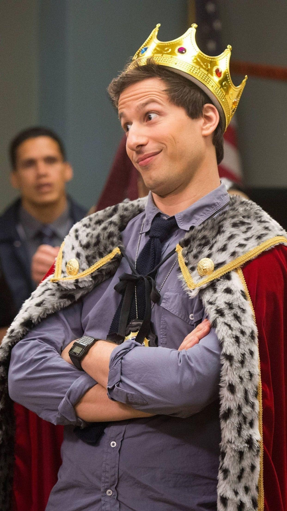
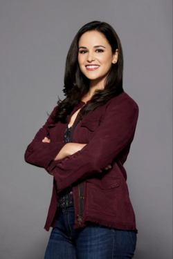
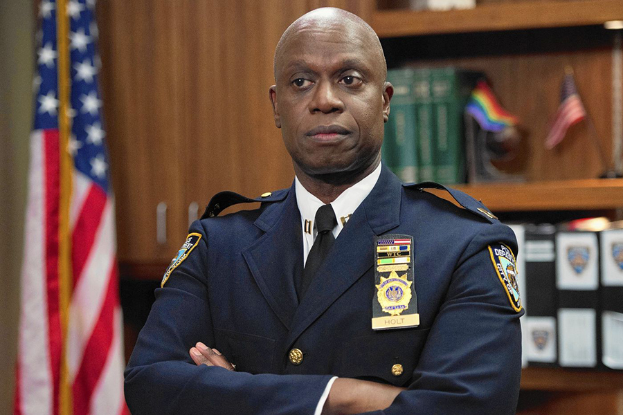

Bueno en este apartado hablaremos sobre las caracteristicas de los personajes y papeles más destacados de los actores.
Características: Detective brillante y creativo, pero inmaduro, fanático de Die Hard, bromista, con gran corazón y lealtad hacia su equipo. Evoluciona de inmaduro a responsable, sobre todo con Amy y como padre. Otros papeles de Andy Samberg: Saturday Night Live (2005–2012), donde se hizo famoso con The Lonely Island. Películas como Hot Rod, Popstar: Never Stop Never Stopping y Palm Springs (comedia romántica sci-fi muy aclamada). Voz en Hotel Transylvania (Jonathan).
Características: Perfeccionista, organizada, competitiva, amante de los reglamentos y el café. Siempre quiere impresionar a Holt y ser la mejor detective. Evoluciona hacia ser capitana y madre. Otros papeles de Melissa Fumero: One Life to Live (telenovela). Gossip Girl (papel secundario). Digman! (serie animada, voz junto a Andy Samberg).
Características: Serio, disciplinado, casi sin expresiones emocionales, pero con un humor seco legendario. Abiertamente gay y pionero en la policía, su relación con su esposo Kevin es parte clave. Mentor de Jake y Amy. Otros papeles de Andre Braugher: Homicide: Life on the Street (detective Frank Pembleton, papel que le dio un Emmy). Men of a Certain Age. Películas: Glory, The Mist, Fantastic Four: Rise of the Silver Surfer.
